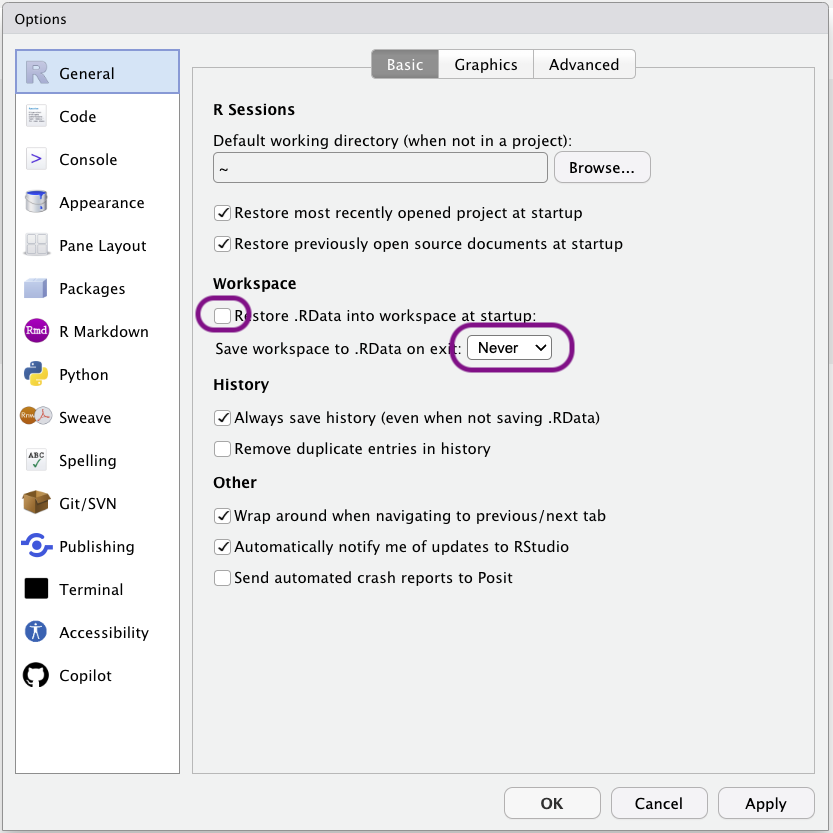
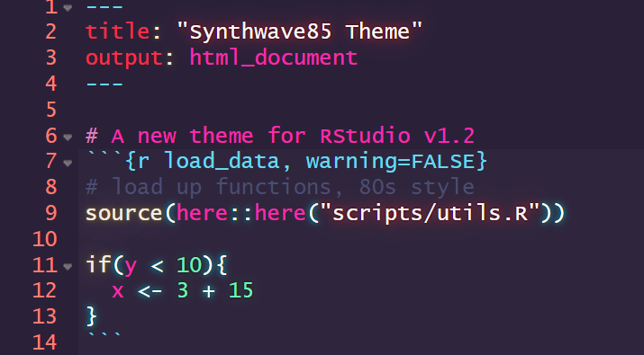
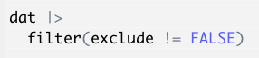
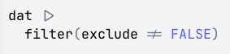

1 Installation and setup
Before you can process and visualize data in R, you need two pieces of software on your computer: the R language itself, and RStudio, the application we use to write and run R code. This chapter shows you where to get them and which settings to change.
One of these settings matters a lot for reproducibility: by default, RStudio can save everything you created in a session and quietly load it again the next time you open it. This makes it easy to write code that only works on your computer, on that day. We turn this off from the start. The rest of the chapter covers optional settings that make RStudio more pleasant to use, and the other software used in my courses.
1.1 Install the base R language and the RStudio IDE
You should install the base R language and the RStudio IDE from here.
There are detailed steps available for Windows and Mac here.
1.2 RStudio settings and options
1.2.1 Important settings to change for reproducibility
For reproducibility, please ensure RStudio’s settings never save the objects in your environment to disk on exit or load them again when opening RStudio. Open the Tools>Global Options menu, go to General, and untick the following box and set save to ‘Never’.

1.2.2 RStudio themes
RStudio can be skinned with different themes, including dark themes that may be easier on your eyes or are, at least, objectively cooler.
The objectively coolest theme of them all is Synthwave85, which can be installed by running the following line of code in RStudio’s console: rstudioapi::addTheme("https://raw.githubusercontent.com/jnolis/synthwave85/master/Synthwave85.rstheme", TRUE, TRUE, FALSE)
To change themes, click the ‘Tools’ drop down menu, then ‘Global Options’, then ‘Appearance’, then ‘RStudio Theme’.

1.2.3 RStudio fonts
Certain monospaced fonts provide the advantage of rendering common R characters or functions more nicely.
This is the same code displayed using Monaco, a built-in font:

And using JetBrainsMono, which supports rendering the base-R pipe (|>) and non-equivalence symbols as single characters:

If you prefer the latter, you can download JetBrainsMono from here and install on your computer. Restart RStudio, then change the font by clicking the ‘Tools’ drop down menu, then ‘Global Options’, then ‘Appearance’, then ‘Editor font’.
1.3 Install Slack and GitHub
If you are reading this book as part of a course with me at the University of Bern, please:
- Install the Slack app. You can download it for Windows here or for Mac here.
- I will send an invitation to the course’s Slack workspace to all students enrolled in the course. Please check your @students.unibe.ch email address.
- Install the GitHub desktop app. You can download here.
- Make an account yourself on https://github.com and log into it on the GitHub desktop app. University of Bern does provide you access to a branded GitHub account, but you’ll lose access to it after you finish your studies, so it’s better to make your own private account.
1.4 Key functions
The main tools and settings covered in this chapter:
| Function or tool | Package | What it does |
|---|---|---|
| R | - | The programming language that runs your code. |
| RStudio | - | The application (IDE) you use to write, run, and manage R code. |
| Tools>Global Options>General | RStudio | Where to stop RStudio saving your workspace on exit and restoring it on start-up. |
rstudioapi::addTheme() |
{rstudioapi} | Installs an additional RStudio theme, such as Synthwave85. |
| Tools>Global Options>Appearance | RStudio | Where to change RStudio’s theme and editor font. |
1.5 Exercises
Check your learning with the following questions. Exercises that involve running code should be done in your local copy of this chapter’s .qmd file (see the Introduction for how to get a copy).
1.5.1 Check your understanding
Answer the questions, then click the button at the bottom to check your answers.
- Which of these is the application you use to write and run R code?
- For reproducibility, RStudio should save your workspace when you close it and restore it when you open it again.
- Where do you change RStudio’s theme and editor font?
- You need to install R before RStudio can run any R code.
- RStudio is the application (an Integrated Development Environment, or IDE) that you write code in. R is the language that actually runs the code. CRAN is where R and its packages are downloaded from, and GitHub is used to store and share code.
- False. If RStudio restores your previous workspace, your code can appear to work only because objects created earlier are still loaded. Set ‘Save workspace’ to ‘Never’ and untick ‘Restore .RData into workspace at startup’, so that every session starts empty.
- Themes and fonts are under Tools>Global Options>Appearance. The workspace settings are under Tools>Global Options>General.
- True. RStudio is an interface to R, not a replacement for it. Without R installed, RStudio has nothing to run your code with.
Why is it a problem if RStudio restores the objects from your last session when you open it?
Your code might seem to run only because it relies on objects that were created earlier, for example by code you typed in the console or have since deleted. Someone else running your script, or you on a different computer, would get errors or different results. Starting each session with an empty environment makes sure that your script contains everything needed to reproduce your results.
Why is it better to make your own GitHub account rather than use a University-branded one?
You lose access to the University-branded account after you finish your studies, along with the work stored in it. An account you make yourself stays yours.
1.5.2 Practice
On your own computer, complete the tasks below. No solutions are provided for these tasks, to reduce the temptation to peek or copy-paste. Use the hints if you get stuck.
1.5.2.1 Check your reproducibility settings
- Open RStudio and check that ‘Restore .RData into workspace at startup’ is unticked and that ‘Save workspace to .RData on exit’ is set to ‘Never’.
- Close and reopen RStudio. Is the Environment pane empty?
Both settings are in Tools>Global Options>General. The Environment pane is usually in the top-right of RStudio.
1.5.2.2 Personalize RStudio
- Install the Synthwave85 theme, or choose one of RStudio’s built-in themes, and switch to it.
- Optionally, install a different editor font and switch to it.
Run the rstudioapi::addTheme() line from this chapter in RStudio’s console, not in a script. Then go to Tools>Global Options>Appearance. New fonts only appear in the list after you restart RStudio.